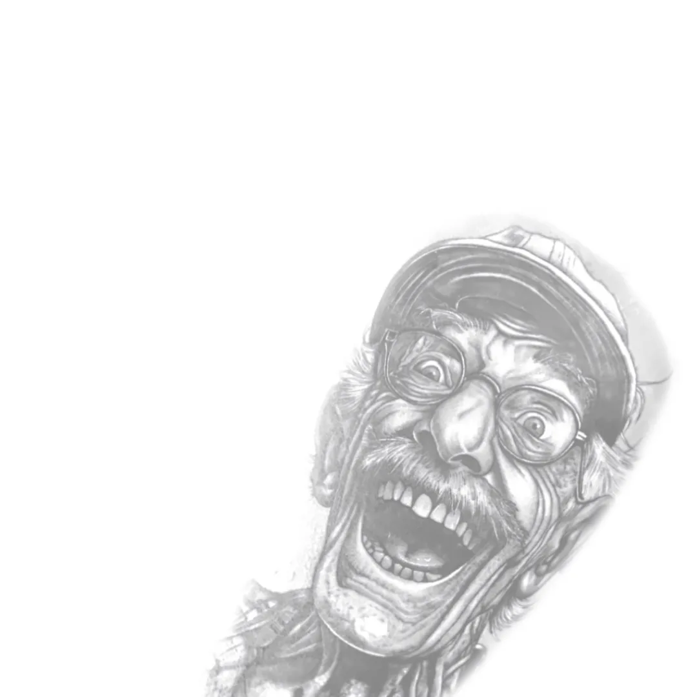
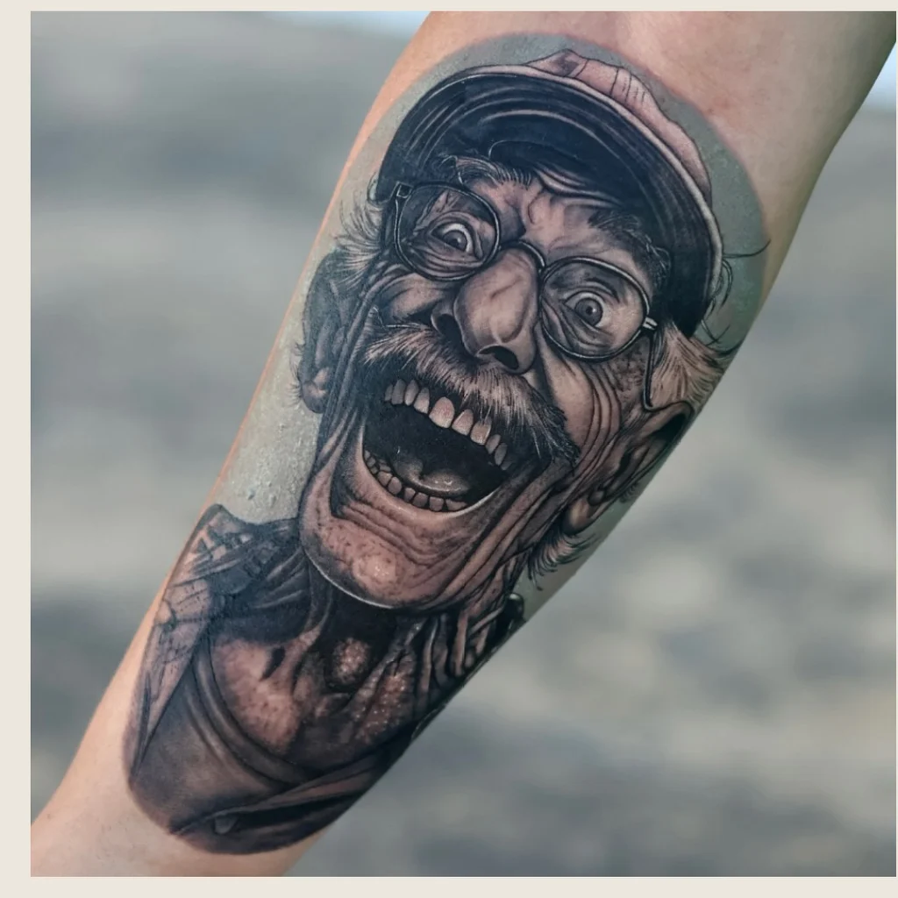
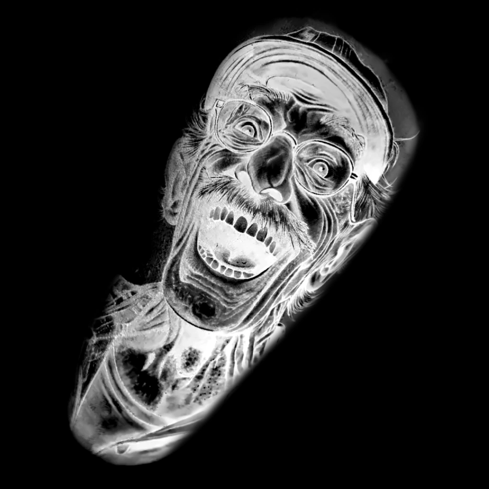
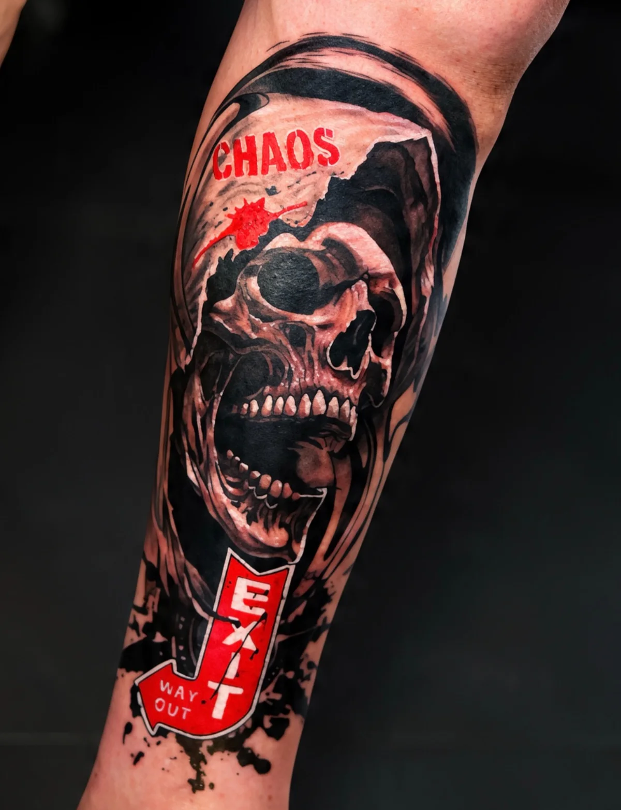
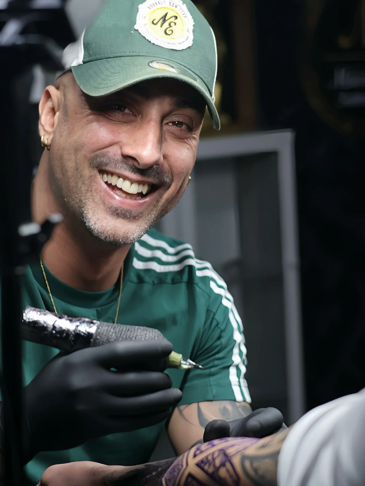
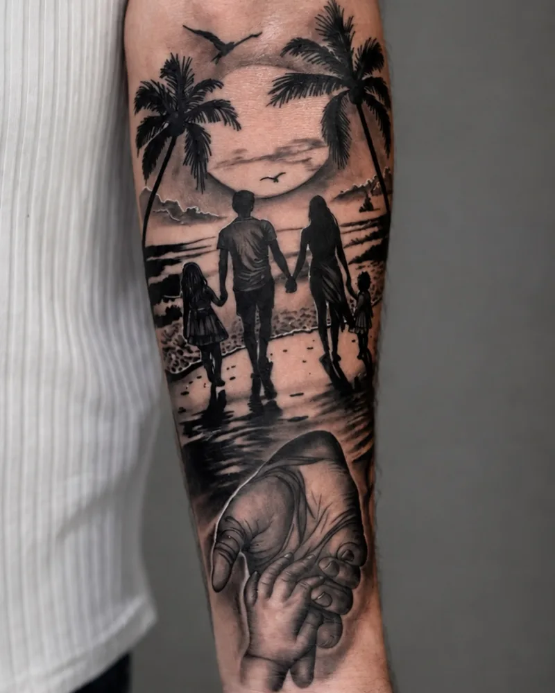
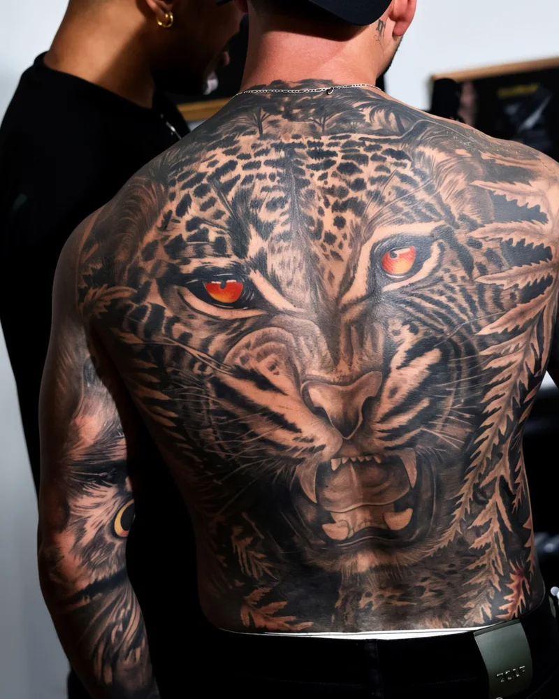
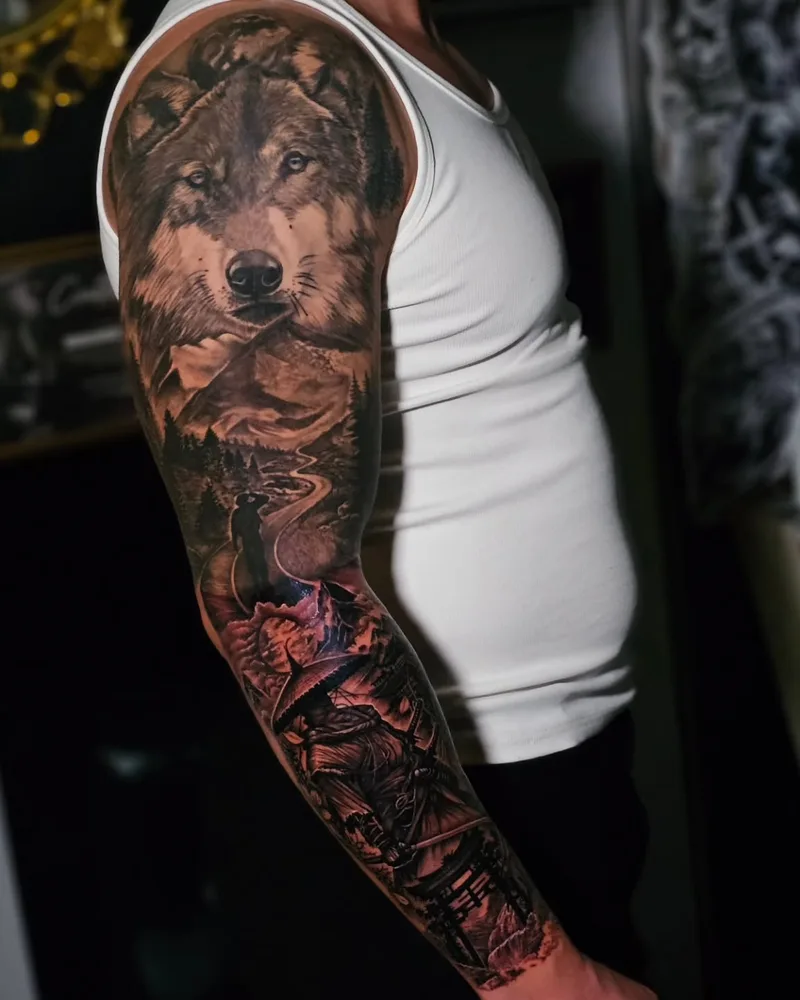
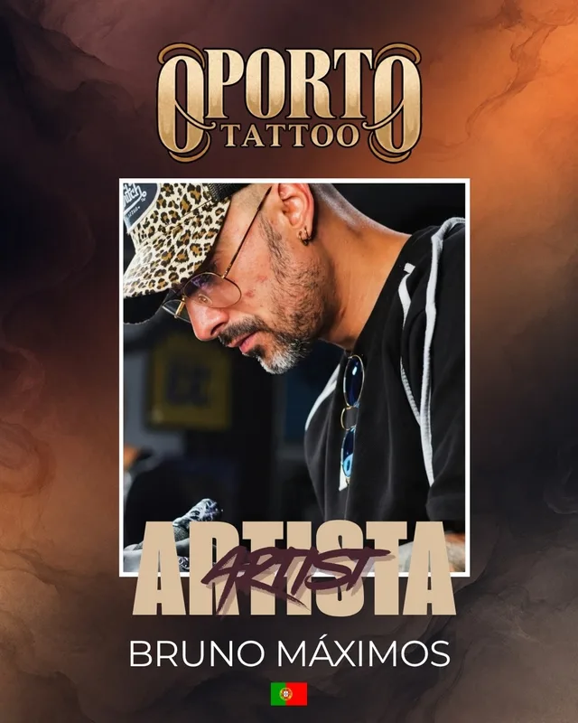
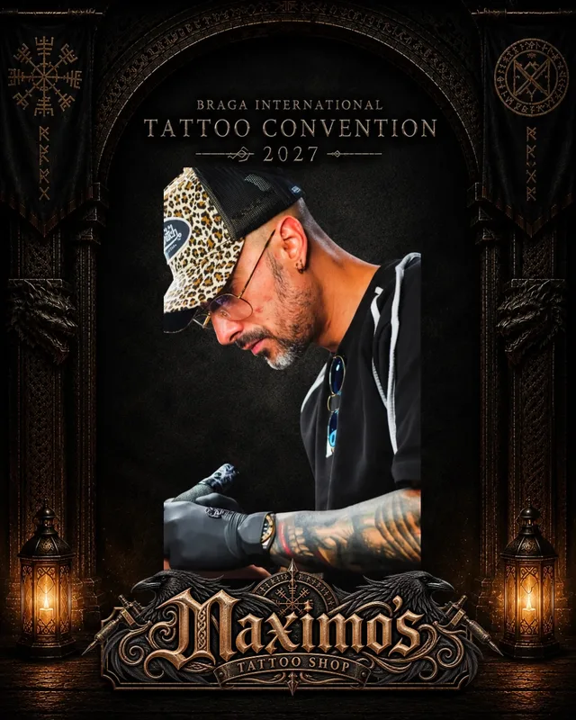

Realismo
Black & Grey
Lousada
Porto · PT

Bruno Máximos, tatuador de realismo e Trash Polka em Lousada
Da pele ao papel
Só a tinta
Tirámos a tinta das fotografias para mostrar o desenho como ele é: preto, cinza e o que a pele deixa respirar. Arrasta para comparar.


Trabalhos
Portfólio

Projeto autoral
Chaos
“Trash Polka não é apenas uma técnica: é a minha forma de juntar realismo e caos numa só peça.”
A caveira ao centro, contraste forte em preto e cinza, explosões gráficas e apontamentos em vermelho. Cada elemento foi desenhado para acompanhar a anatomia da perna.
Quero um projeto assim
O artista
Bruno Máximos
Tatuador e fundador da Máximo's Tattoo Shop, em Lousada, mesmo em frente à Escola Secundária, desde 2019.
Faz sobretudo realismo em preto e cinza: retratos, animais, mitologia e fechamentos de braço, perna e costas. Quando o projeto pede, junta o vermelho e os elementos gráficos do Trash Polka. Cada desenho é exclusivo, e há clientes que viajam de Itália para tatuar com ele.
“O verdadeiro prémio é ver a arte tocar quem a vê.”
- 1.ºlugar em Realismo
Black & Grey - 2019estúdio próprio
em Lousada - 2027Oporto Tattoo e
Braga Convention
Feita para durar
Cicatrizado
“Uma tatuagem não é feita apenas para impressionar no dia em que é terminada, é feita para envelhecer na pele.” Sem filtros, depois de curar.



Do pedido à pele
Como funciona
- iIdeia
Envias o tema, a zona do corpo e as tuas referências.
- iiDesenho
Um projeto exclusivo, pensado para a anatomia da zona.
- iiiSessões
Peças grandes são feitas em várias sessões marcadas.
- ivCuidados
Recebes as indicações para a cicatrização correr bem.
Na estrada
Convenções



Pedido de orçamento
Marcar sessão
O pedido chega pronto ao WhatsApp do Bruno, com tudo o que é preciso para o orçamento.
Lousada · Porto
Estúdio
Máximo's Tattoo Shop
Rua Dr. Mário Soares, 271, Loja 10
4620-425 Lousada, Portugal
Em frente à Escola Secundária de Lousada. Tatuagem e piercing.